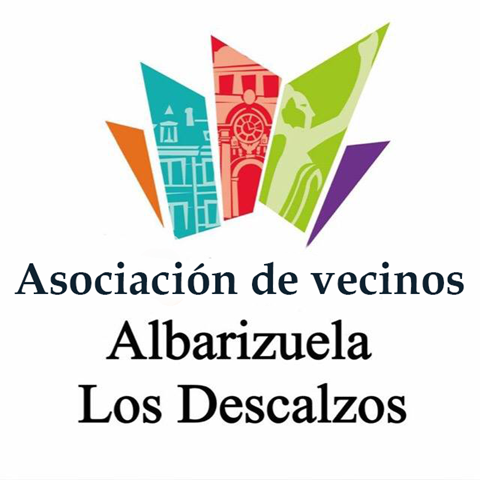
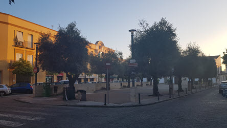

Durante muchos años en nuestro barrio no
se han llevado a cabo nuevas
infraestructuras ni se han renovado las
existentes, que se han ido deteriorando con
el paso de los años.
Para mejorar esta situación
¡NECESITAMOS TU AYUDA!

Nuestros principales objetivos son:
Crear unidad entre los vecinos.
Representar a los vecinos y defender los intereses generales de los mismos.
Informar y apoyar a los vecinos en cuestiones de interés general.
Intentar que se mejoren las infraestructuras del barrio.
Exigir al Ayuntamiento la mejora de la seguridad y limpieza de las calles y aceras del barrio.
Realizar actividades culturales, infantiles, cursos, talleres..., que den vida a la zona.